Zap stochastic approximation on a wind turbine: what each object becomes, and whether it works
Robot Control Lab · Systems Engineering · UT Dallas
Stochastic approximation offers two routes to the same asymptotic covariance. They differ entirely in what they cost to build.
Polyak-Ruppert averaging
Average the iterates. Attains the optimal asymptotic covariance with no curvature estimate anywhere.
Zap stochastic approximation
Estimate the Jacobian on a fast timescale, invert it, use it as a matrix gain. A stochastic Newton-Raphson method.
Both reach the optimal covariance \(\Sigma^{PR} = A^{-1}\Sigma_W A^{-\top}\). Averaging gets there for four lines of code and no curvature estimate at all. So if the case for a matrix gain is argued on terminal variance, it loses. What it can be argued on is transient behavior and conditioning, and this deck asks whether that survives contact with a turbine.
\[ \begin{aligned} \hat A_{n+1} &= \hat A_n + \varepsilon_{n+1}\big[A_{n+1} - \hat A_n\big] \\[0.15em] \theta_{n+1} &= \theta_n + \alpha_{n+1}\, G_{n+1}\, f_{n+1}(\theta_n) \\[0.15em] A_{n+1} &= \partial_\theta f_{n+1}(\theta_n) \\[0.15em] G_{n+1} &= -\big[\varepsilon I + \hat A^{\!\top}_{n+1}\hat A_{n+1}\big]^{-1}\hat A_{n+1} \end{aligned} \]
with the two step sizes satisfying \(\varepsilon_n/\alpha_n \to \infty\).
Line three is the whole problem. A is the Jacobian of the sample update direction, differentiated in the parameter. In Q-learning \(f_{n+1}\) is piecewise linear in \(\theta\), so that derivative is free and rank one. A demodulated gradient estimate has no such closed form.
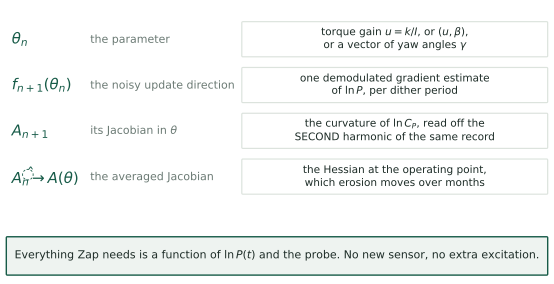
The objective is the turbulence-averaged log-power, \(\Gamma(\theta) = \mathbb{E}\big[\ln P(\theta)\big]\), and because \(3\ln V\) does not depend on \(\theta\) this equals \(\mathbb{E}[\ln C_P]\) up to a constant.
The mean field is \(\bar f(\theta) = \nabla\Gamma(\theta)\). The sample is one dither period of demodulation:
\[f_{n+1}(\theta_n) \;=\; \hat g_n \;=\; \frac{2}{aT}\int_{nT}^{(n+1)T}\ln P(t)\,\sin\omega t\;dt\]
So \(f\) is exactly what LP-ESC already computes. Nothing changes in the forward path. Zap only changes what multiplies \(\hat g_n\) before it reaches the integrator.
\[A(\theta) \;=\; \partial_\theta \bar f(\theta) \;=\; \nabla^2\Gamma(\theta)\]
For the torque-gain problem this is the scalar \(\partial^2 \ln C_P/\partial u^2\) at the operating point. It is the same number that appears in Rotea’s 2017 crossover frequency,
\[\nu_c \;=\; \frac{\kappa}{C_P^{\max}}\left|\frac{\partial^2 C_P}{\partial u^2}(u_o)\right|\]
The curvature is not a new quantity being introduced. It is already in the tuning formula, taken on faith from a design curve. Zap proposes to measure it instead.
The probe already writes the curvature into the data. Nobody reads it.
\(\theta(t) = \theta_n + a\sin\omega t\) is the ordinary ESC dither: \(\theta_n\) the current estimate, held across the period, with the probe riding on it. It is \(d_1(t) = a\sin(\omega t)\) of [KR22] §2, nothing added. Put it into a local quadratic model of \(y = \ln P\), with \(g\) the slope and \(H\) the curvature at \(\theta_n\):
\[y(t) \;=\; \text{const} \;+\; g\,a\sin\omega t \;+\; \tfrac12 H a^2 \sin^2\!\omega t\]
Now use \(\sin^2\omega t = \tfrac12(1 - \cos 2\omega t)\):
\[y(t) \;=\; \underbrace{\Big[\,\cdot\, + \tfrac14 H a^2\Big]}_{\text{DC}} \;+\; \underbrace{g\,a\,\sin\omega t}_{\text{first harmonic}} \;-\; \underbrace{\tfrac14 H a^2\cos 2\omega t}_{\text{second harmonic}}\]
The gradient sits at \(\omega\). The curvature sits at \(2\omega\). Same record, separated in frequency, one probe generating both.
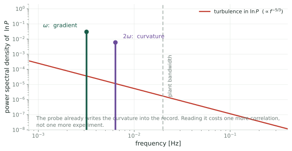
\[ \hat g_n \;=\; \Big\langle\, y\cdot \tfrac{2}{a}\sin\omega t \,\Big\rangle, \qquad \hat H_n \;=\; \big\langle\, y \cdot N(t) \,\big\rangle, \qquad N(t) = \frac{16}{a^2}\left(\sin^2\!\omega t - \frac12\right) \]
Check the second: \(N(t) = -\tfrac{8}{a^2}\cos 2\omega t\), averaged against the \(-\tfrac14 Ha^2\cos2\omega t\) term of the expansion, gives \(\tfrac14 Ha^2\cdot\tfrac{8}{a^2}\cdot\tfrac12 = H\). For \(p\) parameters the same construction is a matrix, Eqs. 20–21 of [GKN12]:
\[N_{i,i}(t) = \frac{16}{a_i^2}\left(\sin^2\!\omega_i t - \frac12\right), \qquad N_{i,j}(t) = \frac{4}{a_ia_j}\sin\omega_i t\,\sin\omega_j t \quad (i \ne j)\]
\(A_{n+1} = \hat H_n\). One extra correlation against a signal the loop already generates: no new sensor, no extra excitation, no additional load.
Two conditions, both checked later by simulation. The dither must be a sinusoid, since a square wave has \(g(t)^2 \equiv 1\) and no second harmonic at all. And \(2\omega\) must sit inside the rotor’s passband, or \(\hat H\) reads low: \(21\%\) low at the published \(T = 150\) s.
For \(\theta \in \mathbb{R}^p\), dither each component at its own frequency and demodulate with a matrix:
\[ N_{ii}(t) = \frac{16}{a_i^2}\left(\sin^2\!\omega_i t - \frac12\right), \qquad N_{ij}(t) = \frac{4}{a_i a_j}\,\sin\omega_i t\,\sin\omega_j t \quad (i\neq j) \]
The frequencies must satisfy the usual separation conditions, and now also \(2\omega_i\) must not collide with any \(\omega_j\) or \(\omega_j \pm \omega_k\). For six yawed turbines that is a real combinatorial constraint on a narrow usable band.
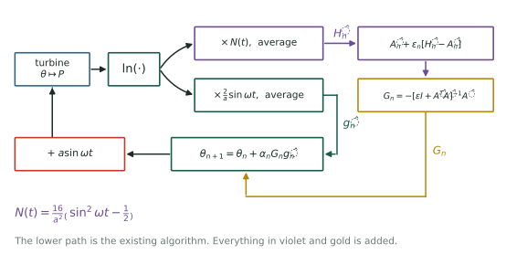
The lower path is LP-ESC exactly as published. Everything added is a second correlation and two recursions, all on signals already in hand.
Three things, and only one of them is about noise.
Write \(\delta = \theta - \theta^\star\), so \(g = H\delta\) with \(H<0\) at a maximum. Gradient ascent linearizes to \(\dot\delta = \kappa H\delta\): the closed-loop rate is \(\kappa|H|\), so it inherits the plant’s curvature. Meyn’s gain carries its own sign, \(G = -H/(\varepsilon+H^2)\), and with \(\varepsilon\to0\) the update gives \(\dot\delta = -\kappa\delta\), rate \(\kappa\) regardless of \(H\).
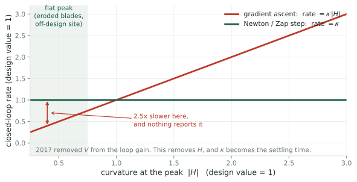
Read the diagonal: tune at \(|H| = 1\), and if erosion or an off-design site flattens the peak to \(|H| = 0.4\) the loop runs \(2.5\times\) too slow; sharpen it to \(2.5\) and it runs \(2.5\times\) too fast, toward the stability edge. Nothing in the loop reports either. The flat line is what a Newton step buys: \(\kappa\) is the settling time rather than merely influencing it.
What Rotea wrote
A version of ESC that “converges very fast but it takes too long to tune its parameters.”
What [RKAJ24] says
“All parameters with the exception of dither frequency and amplitude were obtained by trial and error.”
Under gradient ascent, \(\kappa\) has to be re-found whenever \(H\) changes, and \(H\) changes with the site, with the blade condition, and with the operating point. Under a matrix gain, \(\kappa\) is set once from the settling time you want.
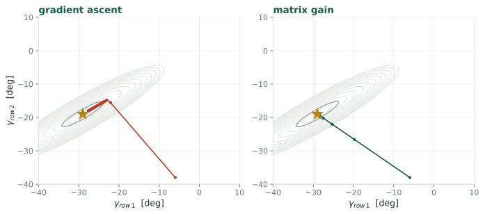
Gradient methods converge at a rate set by the smallest Hessian eigenvalue. The measured farm power maps in the twelve-turbine tunnel experiment are long narrow ridges in the yaw angles, which is precisely the case where that hurts.
In the scalar case \(G = -\hat A/(\varepsilon + \hat A^2)\), so the effective rate is
\[\kappa\,\frac{H^2}{\varepsilon + H^2}\]
On a flat peak \(\hat A \to 0\) and an unregularized Newton step would explode. This form does the opposite: it backs off to a small step, degrading gracefully into gradient ascent exactly where curvature cannot be seen.
Three objections. One of them is a hard precondition, not a matter of degree.
Signal amplitudes are \(ga\) at \(\omega\) and \(\tfrac14Ha^2\) at \(2\omega\); the demodulators divide by \(a\) and \(a^2/8\). With \(D\) the distance from the peak and \(g \approx HD\) near it:
\[\frac{\sigma(\hat H)}{\sigma(\hat g)} = \frac{8}{a}\,2^{-5/6}, \qquad \frac{\text{rel}_H}{\text{rel}_g} = \frac{\sigma(\hat H)/|H|}{\sigma(\hat g)/|g|} = D\,\frac{\sigma(\hat H)}{\sigma(\hat g)}\]
\(\text{rel}_g\) diverges at the optimum because \(g \to 0\) there. \(\text{rel}_H\) does not, because \(H\) does not. So there is always a neighborhood inside which the curvature is the better conditioned of the two, and it ends at \(D = a\,2^{5/6}/8 = 3.0\%\) of \(u_{\text{opt}}\).
\(\sigma(\hat H)/\sigma(\hat g)\) carries units of \(1/u\), so it is not a bare number: \(33\) per \(u_{\text{opt}}\), \(15\) per N\(\cdot\)m\(\cdot\)rpm\(^{-2}\). Only \(D\) is unit-free.
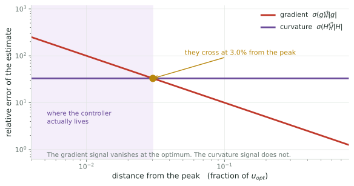
After convergence the loop sits about \(0.5\%\) out, the finite-difference bias from Q1. That is comfortably inside the crossover. The regime where Newton methods are supposed to be impossible is the regime the turbine operates in.
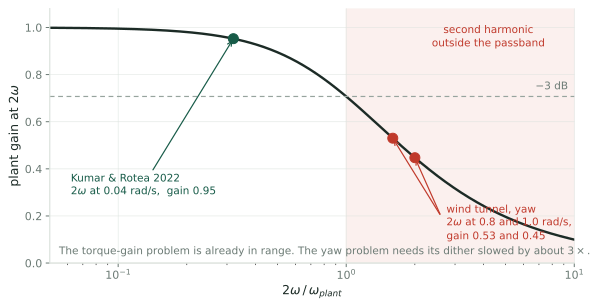
The rotor is a low-pass filter. If \(2\omega\) falls outside its passband the second harmonic is attenuated and phase-shifted, and the curvature estimate is biased by an amount nobody is tracking.
| \(V\) | rotor \(1/\tau\) | \((1/\tau)/2\omega\) at \(T=150\) s | \(T\) needed for \(2\times\) margin |
|---|---|---|---|
| 4 m/s | \(0.078\) | \(0.93\) | \(321\) s |
| 8 m/s | \(0.157\) | \(1.87\) | \(160\) s |
| 12 m/s | \(0.235\) | \(2.80\) | \(107\) s |
At \(4\) m/s the second harmonic is above the rotor corner: the Hessian channel is outside the plant. And shortening \(T\) to converge faster pushes \(2\omega\) further out, so speed and curvature pull in opposite directions.
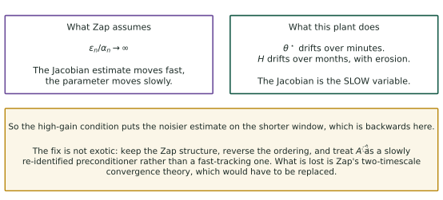
Zap’s separation is structurally unavailable here: \(\hat H\) and \(\theta\) both update once per dither period. It is also not needed, because \(H\) barely moves where it matters, only a \(20\%\) swing across the terminal scatter.
Do not use the demodulated \(\hat H_n\) as the gain. Use it as the innovation in Meyn’s own recursion, with a small \(\gamma\):
\[\hat A_{n+1} = \hat A_n + \gamma\big(\hat H_n - \hat A_n\big), \qquad \operatorname{Var}(\hat A) = \frac{\gamma}{2-\gamma}\operatorname{Var}(\hat H), \qquad N_H = \frac{2}{\gamma}-1\]
One period of \(\hat H\) is far too noisy to use raw, so the recursion is not an optimization but the only thing that makes the estimate exist. Sizing it from the spectral argument, with \(\sigma(\hat H) = 7.1\,|H|\) per period:
| target rel. error | \(N_H\) | \(1/\gamma\) (periods) | wall clock at \(T=600\) s |
|---|---|---|---|
| \(50\%\) | 201 | 101 | \(17\) h |
| \(20\%\) | 1255 | 628 | \(4.4\) d |
Simulation says this is optimistic by about \(4\times\) in \(\sigma(\hat H)\). The measured requirement is on the Simulated slides below. Quote those, not this table.
Meyn’s structure survives intact; only the ordering flips. An estimator running at days against erosion at months is still a two-timescale separation, though the measured margin below is nearer \(5\)–\(10\times\) than \(100\times\).
It cannot help the transient. Over \(u: 4.5\to2.2\), \(|H|\) moves \(1.8\times\) and not monotonically, dipping to \(0.72\times\) near \(u=3\). A day-long estimator cannot track minutes, so early convergence stays uncalibrated.
What averaging gives you
The optimal asymptotic covariance. Free. No Jacobian, no second demodulator, no frequency budget, no bandwidth constraint.
What the matrix gain adds
Gain calibration, transient behavior, and conditioning in more than one dimension. It does not improve the terminal variance.
Both reach the same asymptotic covariance, the one no unbiased scheme beats:
\[\Sigma^{\text{PR}} = A^{-1}\Sigma_W A^{-\top}, \qquad A = \nabla^2 J(\theta^\star), \quad \Sigma_W = \text{covariance of the estimator noise}\]
Averaging gets there by keeping a running mean of the iterates, \(\bar\theta_n = \tfrac1n\sum_{k\le n}\theta_k\), and needs no \(A\) at all. Zap gets there by estimating \(A\) and inverting it.
So the case for a matrix gain here rests on tuning effort and conditioning, not on terminal variance. Argued on variance it loses to a running mean. And note neither is in the published turbine loops, which are constant-gain and so do not average down at all.
Averaging is optimal in exactly one respect and silent on the rest. Four shortcomings, in rising order of how much they matter here:
1 · it is asymptotic
\(\Sigma^{\text{PR}}\) is a central-limit statement as \(n\to\infty\). The transient is still governed by the raw iterate, whose rate is \(\kappa|H|\) and therefore still uncalibrated.
2 · it needs a decaying step
Textbook Polyak-Ruppert wants \(\alpha_n \to 0\). A turbine has to keep tracking a \(\lambda^\star\) that drifts with blade condition, and a decaying gain eventually stops tracking anything.
3 · it does not straighten the path
With \(p>1\) and an ill-conditioned \(H\), steepest ascent takes a curved route and its slowest mode is set by the smallest eigenvalue. Averaging quiets the scatter around that route without shortening it. [GKN12] sells exactly this: straight trajectories on elongated level sets.
4 · it never tells you \(\kappa\)
You still have to choose the step size, and \(K = \kappa|H| < 2\) needs \(|H|\). This is the actual complaint — retuning effort — and averaging leaves it untouched.
So the two are complementary, not competing. Averaging buys terminal variance and no calibration; the Hessian buys calibration and no variance. Zap with a Polyak-Ruppert tail is both, and costs one extra correlation plus the \(15\) days of averaging that \(\hat A\) needs.
Drop the demodulation apparatus and run stochastic approximation directly.
What gets deleted
The dither frequency, the phase compensation \(\theta\), the high-pass and low-pass filters, the lock-in multiplier, the requirement that \(2\omega\) fit inside the plant passband.
What is left
\[\theta_{n+1} = \theta_n + \alpha_n\,G_n\,\hat g_n\]
Perturb, hold, measure, update. The SA recursion with nothing wrapped around it.
An iteration is now a small number of held operating points, each averaged long enough to see through the turbulence, rather than a continuous sinusoid the machine rides.
Draw \(\Delta_n\) with independent \(\pm1\) entries, perturb every parameter at once, and take one difference:
\[\hat g_n \;=\; \frac{\bar y(\theta_n + c\Delta_n) - \bar y(\theta_n - c\Delta_n)}{2c} \begin{bmatrix}\Delta_{n1}^{-1}\\ \vdots \\ \Delta_{np}^{-1}\end{bmatrix}\]
where \(\bar y\) is the mean of \(\ln P\) over a held window.
Two measurements, whatever \(p\) is. That is the property the deterministic scheme cannot match, and it is the entire case for going stochastic on this plant.
The second harmonic is gone with the tone. Two replacements:
Spall’s 2SPSA
A second perturbation \(\tilde\Delta_n\), two more gradient estimates, and a symmetrized outer product
\[\hat H_n = \tfrac12\Big[\tfrac{\delta \hat g_n}{2\tilde c}\tilde\Delta_n^{-\top} + (\cdot)^{\!\top}\Big]\]
Rank two per iteration, four measurements.
Gaussian probe and Stein
For \(\xi \sim N(0,I)\), the second-order Stein identity gives
\[\mathbb{E}\big[\,y\,(\xi\xi^{\!\top} - I)\,\big] = a^2\,\nabla^2\Gamma\]
so \(\hat H_n = \langle y(\xi\xi^{\!\top}-I)\rangle/a^2\). No second perturbation.
Either way \(A_{n+1} = \hat H_n\), the running average is Zap’s (8.51a), and the regularized inverse is unchanged. Spall’s 2SPSA is Zap with SPSA supplying the Jacobian.
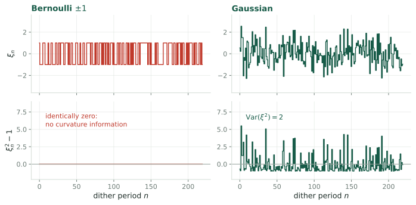
The natural stochastic analogue of the [CLR19] square wave is a random \(\pm1\) sign sequence. It gives the gradient, but \(\xi^2 \equiv 1\), so \(\mathrm{Var}(\xi^2)=0\) and the Stein estimator divides by zero. Bernoulli probing carries no curvature information at all.
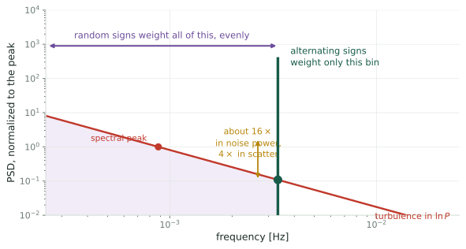
Both schemes difference two windows, so both reject DC. The difference is where each weights the turbulence.
An alternating sign sequence concentrates the estimator’s noise weighting in one bin; a random sequence is white and weights everything below its Nyquist evenly. The tone therefore can be placed clear of the energy-containing range.
Two problems with pressing this. The ratio depends entirely on how long each random sign is held, which sets how many independent samples a run contains, and it swings from \(0.4\times\) at a \(28\) s hold to \(2.3\times\) at a full \(150\) s hold. And the published tone is not placed clear of anything: Kaimal \(fS(f)\) peaks at \(U/4L = 0.0059\) Hz and the dither sits at \(0.0067\) Hz. It is on the peak.
The deterministic Hessian needs a separate channel for every entry of \(\nabla^2\Gamma\), at a distinct frequency product, none colliding with any \(\omega_k\) or \(2\omega_k\), all inside the plant bandwidth.
| parameters \(p\) | frequency slots needed | 2SPSA measurements |
|---|---|---|
| 1, torque gain | 2 | 4 |
| 2, torque and pitch | 6 | 4 |
| 6, yaw, optimized jointly | 58 | 4 |
At \(p=1\) the tone wins on every axis. At \(p=6\) the plan needs 58 slots, so the averaging window has to stretch to 49 minutes before noise is even considered, and the stochastic version becomes the only one that runs.
Same matrix, two ways of measuring it, and the difference is combinatorial.
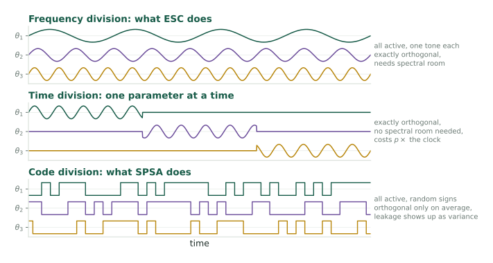
There is one measurement, \(\ln P(t)\), and \(p\) unknowns. The dither frequencies are a multiplexing scheme, nothing more. Distinct \(\omega_i\) make the demodulation channels orthogonal, since \(\langle \sin\omega_i t\,\sin\omega_j t\rangle = \tfrac12\delta_{ij}\).
The quadratic term produces products, and \(\sin\omega_i t \sin\omega_j t = \tfrac12[\cos(\omega_i-\omega_j)t - \cos(\omega_i+\omega_j)t]\). So \(H_{ij}\) appears at sum and difference frequencies and \(H_{ii}\) at \(2\omega_i\). Every member of
\[\{\omega_k\} \;\cup\; \{2\omega_k\} \;\cup\; \{\omega_i \pm \omega_j\}\]
must be distinct, and all of it must fit below \(\omega_{plant}\).
That is stronger than a Sidon set, because the gradient tones must also avoid every second-order product. A plain Golomb ruler is necessary and not sufficient.
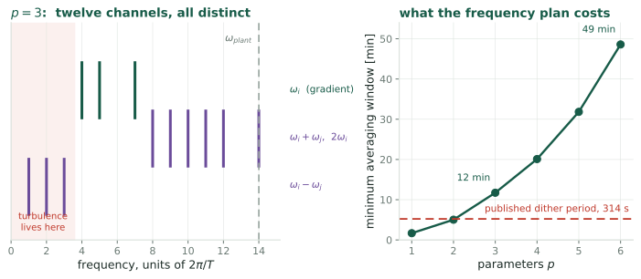
| \(p\) | a valid tone set | widest product | minimum window |
|---|---|---|---|
| 1 | \(\{1\}\) | 2 | 101 s |
| 3 | \(\{4,5,7\}\) | 14 | 704 s |
| 6 | \(\{4,10,17,26,28,29\}\) | 58 | 2915 s |
| ESC, second harmonic | SA, 2SPSA or Stein | |
|---|---|---|
| separation | frequency division | code division |
| orthogonality | exact, over one period | in expectation only |
| measurements per update | 0 extra, same window | 4 extra |
| spectral demand | grows as \(p^2\) | none |
| noise weighting | one chosen bin | whole band below Nyquist |
| scatter in \(\hat g\) | reference | \(0.4\) to \(2.3\times\), hold-dependent |
| settling dead time | none, rides continuously | about \(5\tau\) per held point |
| perturbation seen by the drivetrain | smooth sinusoid | step changes |
| degenerate cases | tones colliding with products | Bernoulli probe, \(\mathrm{Var}(\xi^2)=0\) |
The tone wins on orthogonality, measurement count and actuation smoothness, and loses on spectral demand, which is the row that decides the farm-scale problem. Noise weighting is a draw, not a win: it would favor the tone only if the tone were placed off the turbulence peak, and at \(T = 150\) s it is not.
\(p \le 2\)
The frequency plan is trivial and the tone is better on every axis that matters. There is no argument for random probing here.
\(p \ge 4\)
The plan needs a 20 to 50 minute window before noise even enters. Random probing is not merely competitive, it is the only scheme that runs.
The load row deserves more weight than it usually gets. Kumar and Rotea 2022, Figure 13 of [RKAJ24]: the single step in torque gain when the controller switches on raises drivetrain torsion DEL by 70% at 4 m/s. SPSA makes a step like that every iteration, in both directions, and nobody has costed that out.
Both columns assume the Hessian must be measured at the same rate as the gradient. Nothing in the problem requires that.
Gradient
Keep the tone. Continuous, gentle, low-noise, and only \(p\) frequencies are needed when no products have to be resolved.
Curvature
A deliberate experiment, run rarely. \(H\) drifts with erosion, over months. Once a week is often enough.
In between
Use the last estimate as a slowly refreshed preconditioner, which is Zap with the timescales put the right way round.
Run rarely, the curvature experiment can be time-division multiplexed: sweep one parameter at a time. No frequency plan, no \(2\omega\) constraint, no \(p^2\) bandwidth, and no random probing either.
Everything so far is algebra on a fitted curve. This section runs it.
The plant
NREL 5 MW rotor. \(I_{\text{eff}}\dot\Omega = \tau_{\text{aero}}(V,\Omega) - k\Omega^2\) integrated with diffrax (Tsit5, adaptive, rtol \(10^{-6}\)). Heier \(C_P\) remapped to \((\lambda^\star, C_P^{\max}) = (7.5, 0.49)\).
The loop
Sinusoidal dither \(u_n + a\sin\omega t\) at \(a = 13.6\%\) of \(u^\star\), the [KR22] amplitude. Demodulate \(\ln P\) at \(\omega\) and \(2\omega\) over each period, then update. Turbulence is an IEC Kaimal realization at \(\mathrm{TI} = 10\%\).
One knob, sharpness, scales the deviation of \(C_P\) from its peak. It leaves \(\lambda^\star\) and \(C_P^{\max}\) untouched and multiplies \(|H|\) at the optimum by exactly that factor, verified to three digits. That is how the plant curvature is varied without changing anything else.
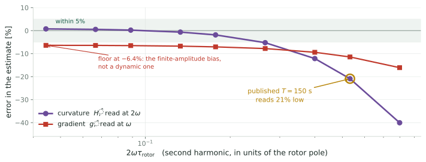
Gain held \(5\%\) off the peak in steady wind, so the true \(J''\) is known and the only error is the estimator’s. \(\hat H\) is exact to \(0.8\%\) once \(2\omega\tau_{\text{rotor}} \lesssim 0.1\), so the identity survives the rotor dynamics. At the published \(T = 150\) s, \(\hat H = 0.79\,J''\): right sign, right shape, magnitude a fifth too small.
Fitting the whole sweep, the bias is \(\hat H/J'' = \big(1+(2\omega\tau)^2\big)^{-1} = |G(2\omega)|^2\), to \(1.2\) percentage points rms. Two factors of \(|G|\), for two separate reasons:
attenuation
The rotor is a low-pass between torque gain and power, so the second harmonic arrives smaller by \(|G(2\omega)| = (1+(2\omega\tau)^2)^{-1/2}\).
phase mismatch
It also arrives late, by \(\phi = -\arctan 2\omega\tau\). Correlating against an in-phase \(\cos2\omega t\) recovers \(\cos\phi\), which is the same factor again.
The gradient is attenuated too, just less, so the two partly cancel in \(\hat g/\hat H\). Dynamic parts only: \(\hat g/g = 0.946\), \(\hat H/H = 0.791\), so the Newton step is inflated by \(1.20\times\), matching the predicted \(|G(\omega)|^2/|G(2\omega)|^2 = 1.199\).
So divide it out: \(\hat H_{\text{corr}} = \hat H\,(1+(2\omega\tau)^2)\), with \(\tau\) from the rotor model you already have. A calibration, not a stability threat: at the published \(K=0.4\) the inflated gain is \(0.48\) against a bound of \(2\). But left uncorrected it defeats the point of a matrix gain, which was to make \(\kappa\) be the settling time.
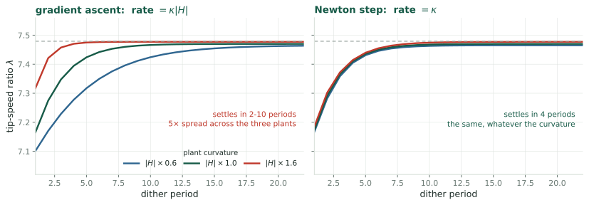
\(\kappa\) tuned once, for \(K = 0.4\) on the \(|H|\times1.0\) plant, never retuned; all six runs start at \(1.2\,u^\star\) in steady wind. Gradient ascent settles in \(10\), \(5\) and \(2\) periods as \(|H|\) goes \(0.6 \to 1.0 \to 1.6\), a \(5\times\) spread. The Newton step settles in \(4\) on all three, a \(1.0\times\) spread. The central claim of the deck, and it holds.
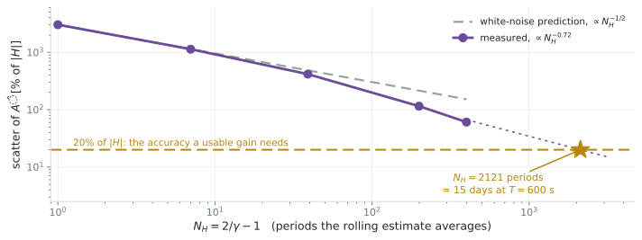
Gain held at \(u^\star\), open loop, \(300\) periods of Kaimal turbulence. One period’s \(\hat H\) scatters by \(3000\%\) of \(|H|\), four times the spectral estimate. Useless on its own.
The rolling filter rescues it faster than white noise would, \(N_H^{-0.72}\) against \(N_H^{-1/2}\), because consecutive errors are negatively correlated in band-limited turbulence. Reaching \(20\%\) needs \(N_H \approx 2100\) periods, about 15 days at \(T = 600\) s.
A Newton step uses \(G = -\hat A/(\varepsilon + \hat A^2)\). If \(\hat A\) comes back with the wrong sign, \(G\) reverses and the loop runs downhill. Two ingredients, neither from a closed-loop run:
algebra
Sign correctness needs \(\sigma(\hat A) < |H|\), i.e. relative error under \(100\%\). Nothing about the turbine enters.
the previous slide
That slide’s curve is an open-loop measurement, gain held fixed, no feedback to saturate. It converts the \(100\%\) into a period count.
| what it buys | \(\sigma(\hat A)/\lvert H\rvert\) | \(N_H\) | at \(T = 600\) s |
|---|---|---|---|
| sign correct at \(1\sigma\) | \(100\%\) | \(229\) | \(1.6\) days |
| sign safe at \(2\sigma\) | \(50\%\) | \(597\) | \(4.1\) days |
| gain calibrated to a fifth | \(20\%\) | \(2121\) | \(14.7\) days |
So 1.6 days is the hard minimum, not the 15. Below it the matrix gain is not merely imprecise, it is occasionally the wrong sign, and a plain gradient loop is strictly better. Above it the calibration improves smoothly.
A closed-loop run at \(\gamma = 0.05\) (\(N_H = 39\), \(\sigma(\hat A)/|H| \approx 3.6\)) shows the failure concretely: \(\hat A\) ran from \(+7.9\) to \(-5.5\) times \(H_{\text{true}}\) and flipped sign 10 times in 60 periods. That run is only an illustration — its loop gain was also far too high and it saturated — so no number is taken from it. Rerun below with both fixed.
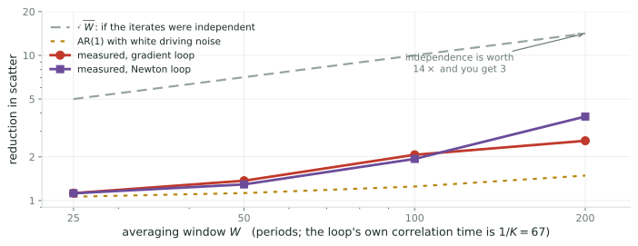
\(K = 0.015\) so the loop holds its optimum (\(0\%\) of updates on the limits), \(\gamma = 0.005\) so \(\hat A\) keeps its sign. \(420\) periods, started at \(u^\star\).
Averaging helps both loops, \(2.6\times\) and \(3.8\times\) at \(W = 200\). The \(1.07\times\) from the earlier run was entirely the saturation artifact. But it is nowhere near the \(\sqrt{W} = 14\times\) of independent samples, because the iterate is strongly autocorrelated: \(1/K = 67\) periods.
| \(W\) | \(\sqrt{W}\) ideal | AR(1), white noise | gradient | Newton |
|---|---|---|---|---|
| 25 | \(5.0\times\) | \(1.06\times\) | \(1.12\times\) | \(1.12\times\) |
| 100 | \(10.0\times\) | \(1.25\times\) | \(2.07\times\) | \(1.94\times\) |
| 200 | \(14.1\times\) | \(1.49\times\) | \(2.58\times\) | \(3.79\times\) |
The measurement sits between the two predictions, and beats the AR(1) one for the same reason \(\hat A\) averaged down faster than \(N_H^{-1/2}\) earlier: the driving noise is negatively correlated in band-limited turbulence, so the iterate is less persistent than \(\rho = 1-K\) implies. Both of my predictions were too pessimistic, and both assumed white driving noise.
The comparison that matters: raw scatter is \(0.082\,u^\star\) for the gradient loop and \(0.219\,u^\star\) for the Newton loop at matched design gain. The matrix gain is \(2.7\times\) noisier, because \(\hat A\)’s own error modulates the step size. After averaging at \(W=200\) the gradient loop still wins, \(0.032\) against \(0.058\).
So on terminal variance the matrix gain costs rather than buys, measured, not argued. Its case rests entirely on rate calibration and conditioning. That is the same conclusion as the earlier slide, now with numbers behind it.
Tone, feasible now
Single-turbine torque gain, \(p=1\), so no frequency plan to solve. But slow the dither: simulation puts \(2\omega\tau = 0.53\) at \(T=150\) s, where \(\hat H\) reads \(21\%\) low. \(T = 600\) s brings that under \(1\%\).
Tone, after retuning
Two parameters, \((u,\beta)\). Three demodulation channels to place, and the bandwidth is there for them.
Random probing
Yaw across a farm, optimized jointly. This is not what the tunnel experiment does: it runs six scalar loops on clusters, which is how it keeps \(p=1\).
Both versions share everything downstream of the Jacobian: the averaging recursion, the regularized inverse, the Polyak-Ruppert tail. Only the way \(A_{n+1}\) is measured changes, so the two are the same program with two front ends.
P0, two weeks
Run the existing LP-ESC at a fixed torque gain, demodulate at \(2\omega\), and compare \(\hat H\) against the curvature of the simulator’s own \(C_P\) surface. Pure measurement, no loop closed.
Fitting \(2\omega\) inside the rotor
Does \(\hat H\) converge to within, say, 20% over a plausible averaging window, and does its scatter match the \((8/a)2^{-5/6}\) prediction?
If \(\hat H\) can be measured open-loop, everything else in this deck is engineering. If it cannot, the matrix gain is dead and Polyak-Ruppert averaging is the whole answer to Rotea’s question.
The Jacobian Zap needs is measurable: one octave up from the gradient, or in the second moment of a random probe.
The mapping
\(f\) is a gradient estimate, from a tone or from a random perturbation. \(A\) is the curvature of \(\ln C_P\), read at \(2\omega\) or from a second moment. \(\hat A\) is the Hessian that erosion moves.
The open part
Which front end to use is set by \(p\), not by taste. Still open: a convergence theory for the reversed timescale ordering this plant actually wants.
Meyn, Control Systems and Reinforcement Learning, §8.5 · Ghaffari, Krstic & Nesic, Automatica 2012 · Spall, IEEE TAC 45 (2000) 1839–1853 · Kumar & Rotea, Energies 2022 · Rotea, Kumar, Aju & Jin, J. Phys. Conf. Ser. 2767 (2024) 032043
[R17] M. A. Rotea, Logarithmic power feedback for extremum seeking control of wind turbines, IFAC-PapersOnLine 50(1) (2017) 4504–4509. doi:10.1016/j.ifacol.2017.08.381
[CLR19] U. Ciri, S. Leonardi & M. A. Rotea, Evaluation of log-of-power extremum seeking control for wind turbines using large eddy simulations, Wind Energy 22 (2019) 992–1002. doi:10.1002/we.2336
[KR22] D. Kumar & M. A. Rotea, Wind turbine power maximization using log-power proportional-integral extremum seeking, Energies 15 (2022) 1004. doi:10.3390/en15031004
[KR24] D. Kumar & M. A. Rotea, Optimal tip-speed ratio for degraded blades, Wind Energy Science 9 (2024) 2133–2146. doi:10.5194/wes-9-2133-2024
[RKAJ24] M. A. Rotea, D. Kumar, E. J. Aju & Y. Jin, Multi-row extremum seeking for wind farm power maximization, J. Phys. Conf. Ser. 2767 (2024) 032043. doi:10.1088/1742-6596/2767/3/032043
[MGR24] S. P. Mulders, N. Gallo & M. A. Rotea, Analysis of extremum seeking control for wind turbine torque controller optimization by aerodynamic and generator power objectives, ACC (2024). arXiv:2407.08059
[GKN12] A. Ghaffari, M. Krstić & D. Nešić, Multivariable Newton-based extremum seeking, Automatica 48 (2012) 1759–1767. doi:10.1016/j.automatica.2012.05.059
[S00] J. C. Spall, Adaptive stochastic approximation by the simultaneous perturbation method, IEEE Trans. Automat. Contr. 45 (2000) 1839–1853. PDF
[LM23] C. Lauand & S. Meyn, Quasi-stochastic approximation: design principles with applications to extremum seeking control, IEEE Control Systems Magazine 43 (2023). doi:10.1109/MCS.2023.3291884
[A22] N. J. Abbas et al., A reference open-source controller for fixed and floating offshore wind turbines, Wind Energy Science 7 (2022) 53–73. doi:10.5194/wes-7-53-2022
[J09] J. Jonkman, S. Butterfield, W. Musial & G. Scott, Definition of a 5-MW reference wind turbine, NREL/TP-500-38060 (2009). PDF · [IEC] IEC 61400-1 ed. 3, normal turbulence model.
Companion to Extremum Seeking Control of Wind Turbines.
← Wind Turbine Control · Q4, the Matrix Gain